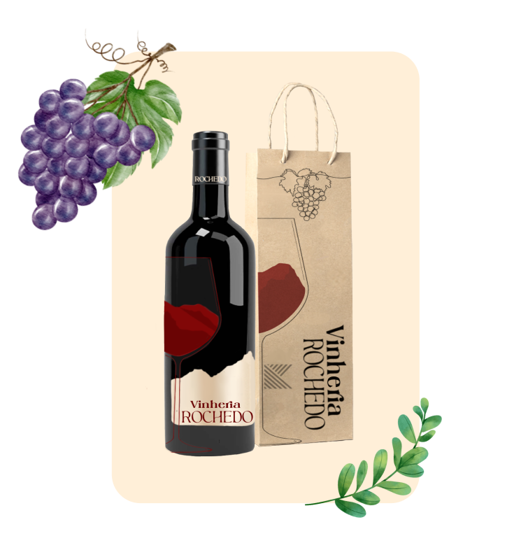

Explore nossa página de receitas que une alta gastronomia à arte dos vinhos selecionados.
Descubra pratos cuidadosamente elaborados para realçar as nuances de diferentes vinhos, criando combinações memoráveis.
Frango ao Vinho Branco
Ingredientes:
4 peitos de frango
1 xícara de vinho branco seco
2 dentes de alho picados
Suco de 1 limão
1 colher de sopa de azeite de oliva
Sal e pimenta a gosto
Modo de Preparo:
Tempere os peitos de frango com alho, sal, pimenta e suco de limão.
Em uma frigideira, aqueça o azeite e doure o frango.
Adicione o vinho branco e cozinhe em fogo médio até o frango estar cozido e o molho reduzido.
Sirva o frango regado com o molho de vinho branco. Acompanha bem com arroz ou legumes cozidos no vapor.
